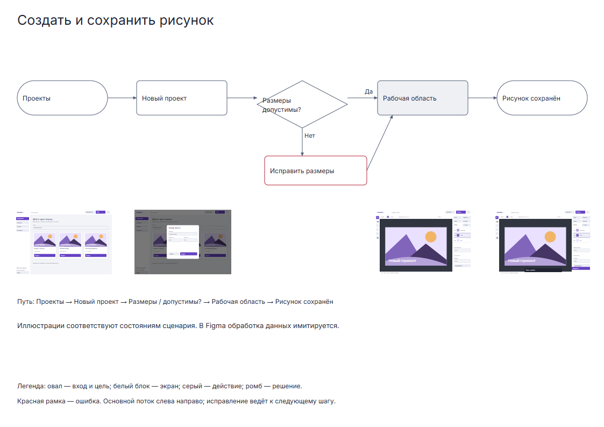
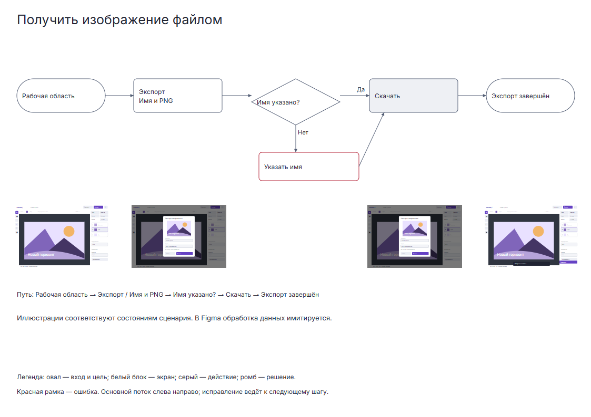
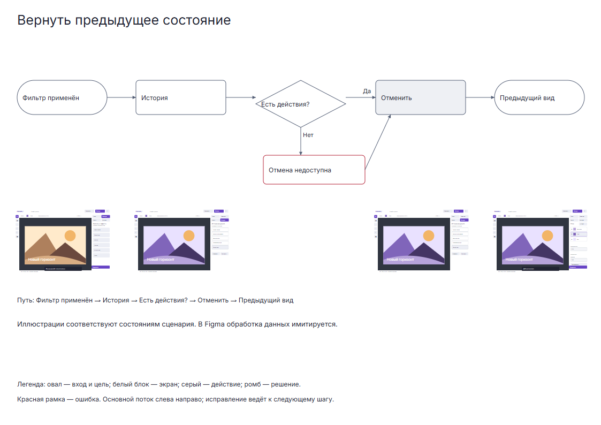
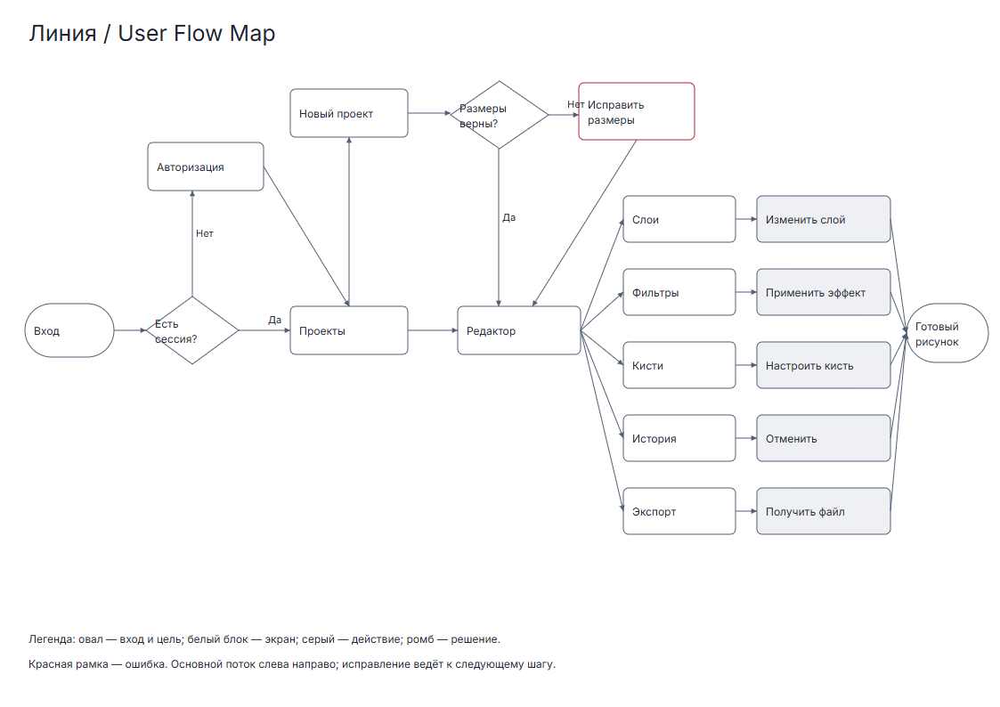
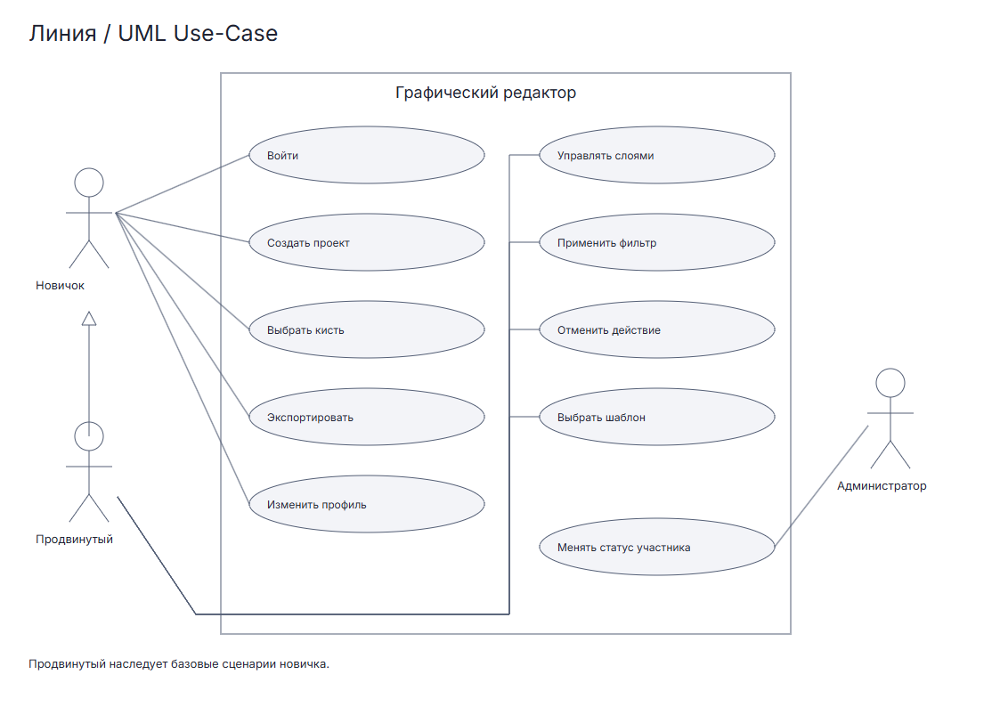

<!doctype html><html lang="ru"><meta charset="utf-8"><meta name="viewport" content="width=device-width,initial-scale=1"><title>Линия · diagrams</title><link rel="stylesheet" href="assets/css/showcase.css"><header><a href="index.html">Линия / комплект лабораторной</a><nav><a href="screens.html">screens</a><a href="states.html">states</a><a href="prototypes.html">prototypes</a><a href="ui-kit.html">ui-kit</a><a href="moodboard.html">moodboard</a><a href="diagrams.html">diagrams</a><a href="https://www.figma.com/proto/FPaA4Y8YO1qcxkyT9T2xvW?node-id=2-299&starting-point-node-id=2%3A299&scaling=contain">Прототип Figma</a></nav></header><main><h1>diagrams</h1><div class="grid"><section><h2>UF_Create</h2><a href="assets/svg/UF_Create.svg"></a><p>1123 × 794</p></section><section><h2>UF_Filter</h2><a href="assets/svg/UF_Filter.svg"></a><p>1123 × 794</p></section><section><h2>UF_Export</h2><a href="assets/svg/UF_Export.svg"></a><p>1123 × 794</p></section><section><h2>UF_Undo</h2><a href="assets/svg/UF_Undo.svg"></a><p>1123 × 794</p></section><section><h2>A4_User_Flow_Map</h2><a href="assets/svg/A4_User_Flow_Map.svg"></a><p>1123 × 794</p></section><section><h2>UML_UseCase</h2><a href="assets/svg/UML_UseCase.svg"></a><p>1123 × 794</p></section></div></main></html>